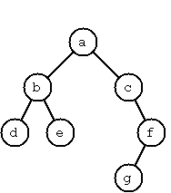
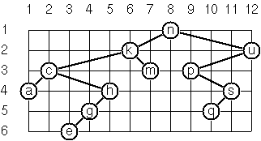

author: niplav, created: 2019-01-14, modified: 2022-06-28, language: english, status: in progress, importance: 3, confidence: other
The list of 99 problems was original written by Werner Hett for Prolog and has been translated into a number of languages since then. This is a translation for the programming language Klong, inspired mainly by a Lisp version.
A number of changes were made to the original problems list. For one, Klong neither allows underscores nor dashes in function names, so it seemed like the best option to just remove the dashes from the names without replacing them with anything else. Another possible option would have been to replace them with dots, but dots are usually used in order to denote modules and seemed inappropriate here.
Also, some problems in the Logic and Codes (P46, P47 and P48) section are in their original form not possible in Klong. We tried to translate them temporarily and will attempt to find array-language nearest equivalents, but for now they will stand there in their original form.
We use the original numbering to make it consistent with the majority of versions of the list on the internet.
From P60 on, the examples in the Lisp version were the original Prolog predicates, so I added fitting examples when appropriate. I also terminate each one-line description of a problem with a dot '.'.
Example:
mylast([:a :b :c :d])
:d
Example:
mybutlast([:a :b :c :d])
[:c :d]
Example:
elementat([:a :b :c :d :e];3)
:c
A palindrome can be read forward or backward; e.g. [:x :a :m :a :x].
Transform a list, possibly holding lists as elements into a 'flat' list by replacing each list with its elements (recursively).
Example:
myflatten([:a [:b [:c :d] :e]])
[:a :b :c :d :e]
If a list contains repeated elements they should be replaced with a single copy of the element. The order of the elements should not be changed.
Example:
compress([:a :a :a :a :b :c :c :a :a :d :e :e :e :e])
[:a :b :c :a :d :e]
If a list contains repeated elements they should be placed in separate sublists.
pack([:a :a :a :a :b :c :c :a :a :d :e :e :e :e])
[[:a :a :a :a] [:b] [:c :c] [:a :a] [:d] [:e :e :e :e]]
Use the result of problem P09 to implement the so-called run-length encoding data compression method. Consecutive duplicates of elements are encoded as lists [N E] where N is the number of duplicates of the element E.
Example:
encode([:a :a :a :a :b :c :c :a :a :d :e :e :e :e])
[[4 :a] [1 :b] [2 :c] [2 :a] [1 :d] [4 :e]]
Modify the result of problem P10 in such a way that if an element has no duplicates it is simply copied into the result list. Only elements with duplicates are transferred as [N E] lists.
encodemodified([:a :a :a :a :b :c :c :a :a :d :e :e :e :e])
[[4 :a] :b [2 :c] [2 :a] :d [4 :e]]
Given a run-length code list generated as specified in problem P11. Construct its uncompressed version.
Implement the so-called run-length encoding data compression method directly. I.e. don't explicitly create the sublists containing the duplicates, as in problem P09, but only count them. As in problem P11, simplify the result list by replacing the singleton lists [1 X] by X.
encodedirect([:a :a :a :a :b :c :c :a :a :d :e :e :e :e])
[[4 :a] :b [2 :c] [2 :a] :d [4 :e]]
Example:
dupli([:a :b :c :c :d])
[:a :a :b :b :c :c :c :c :d :d]
Example:
repli([:a :b :c];3)
[:a :a :a :b :b :b :c :c :c]
Example:
drop([:a :b :c :d :e :f :g :h :i :k];3)
[:a :b :d :e :g :h :k]
Do not use any functions from the standard library.
Example:
split([:a :b :c :d :e :f :g :h :i :k]; 3)
[[:a :b :c] [:d :e :f :g :h :i :k]]
Given two indices, I and K, the slice is the list containing the elements between the I'th and K'th element of the original list (both limits included). Start counting the elements with 1.
Example:
slice([:a :b :c :d :e :f :g :h :i :k];3;7)
[:c :d :e :f :g]
Examples:
rotate([:a :b :c :d :e :f :g :h];3)
[:d :e :f :g :h :a :b :c]
rotate([:a :b :c :d :e :f :g :h];-2)
[:g :h :a :b :c :d :e :f]
Example:
removeat([:a :b :c :d];2)
[:a :c :d]
Example:
insertat(:alfa;[:a :b :c :d];2)
[:a :alfa :b :c :d]
If first argument is smaller than second, produce a list in decreasing order.
Example:
range(4;9)
[4 5 6 7 8 9]
The selected items shall be returned in a list.
Example:
rndselect([:a :b :c :d :e :f :g :h];3)
[:e :d :a]
Hint: Use the built-in random number generator and the result of problem P20.
The selected numbers shall be returned in a list.
Example:
lottoselect(6;49)
[23 1 17 33 21 37]
Hint: Combine the solutions of problems P22 and P23.
Example:
rndpermu([:a :b :c :d :e :f])
[:b :a :d :c :e :f]
Hint: Use the solution of problem P23.
In how many ways can a committee of 3 be chosen from a group of 12 people? We all know that there are C(12,3) = 220 possibilities (C(N,K) denotes the well-known binomial coefficients). For pure mathematicians, this result may be great. But we want to really generate all the possibilities in a list.
Example:
combination(3;[:a :b :c :d :e :f])
[[:a :b :c] [:a :b :d] [:a :b :e] ...]
(a) In how many ways can a group of 9 people work in 3 disjoint subgroups of 2, 3 and 4 persons? Write a function that generates all the possibilities and returns them in a list.
Example:
group3([:aldo :beat :carla :david :evi :flip :gary :hugo :ida])
[[[:aldo :beat] [:carla :david :evi] [:flip :gary :hugo :ida]]
...]
(b) Generalize the above function in a way that we can specify a list of group sizes and the function will return a list of groups.
Example:
group([:aldo :beat :carla :david :evi :flip :gary :hugo :ida];[2 2 5])
[[:aldo :beat] [:carla :david] [:evi :flip :gary :hugo :ida]
...]
Note that we do not want permutations of the group members; i.e. [[:aldo
:beat] ...] is the same solution as [[:beat :aldo] ...]. However,
we make a difference between [[:aldo :beat] [:carla :david] ...] and
[[:carla :david] [:aldo :beat] ...].
You may find more about this combinatorial problem in a good book on discrete mathematics under the term "multinomial coefficients".
(a) We suppose that a list contains elements that are lists themselves. The objective is to sort the elements of this list according to their length. E.g. short lists first, longer lists later, or vice versa.
Example:
lsort([[:a :b :c] [:d :e] [:f :g :h] [:d :e] [:i :j :k :l] [:m :n] [:o]])
[[:o] [:d :e] [:d :e] [:m :n] [:a :b :c] [:f :g :h] [:i :j :k :l]]
(b) Again, we suppose that a list contains elements that are lists themselves. But this time the objective is to sort the elements of this list according to their length frequency; i.e., in the default, where sorting is done ascendingly, lists with rare lengths are placed first, others with a more frequent length come later.
Example:
lfsort([[:a :b :c] [:d :e] [:f :g :h] [:d :e] [:i :j :k :l] [:m :n] [:o]])
[[:i :j :k :l] [:o] [:a :b :c] [:f :g :h] [:d :e] [:d :e] [:m :n]]
Note that in the above example, the first two lists in the result have length 4 and 1, both lengths appear just once. The third and forth list have length 3 which appears twice (there are two list of this length). And finally, the last three lists have length 2. This is the most frequent length.
Example:
isprime(7)
1
Use Euclid's algorithm.
Example:
gcd(36;63)
9
Two numbers are coprime if their greatest common divisor equals 1.
Example:
coprime(35;64)
1
Euler's so-called totient function phi(m) is defined as the number of positive integers r () that are coprime to m.
Example: m = 10: r = 1,3,7,9; thus phi(m) = 4.
Note the special case: phi(1) = 1.
totientphi(10)
4
Find out what the value of phi(m) is if m is a prime number. Euler's totient function plays an important role in one of the most widely used public key cryptography methods (RSA). In this exercise you should use the most primitive method to calculate this function (there are smarter ways that we shall discuss later).
Construct a flat list containing the prime factors in ascending order.
Example:
primefactors(315)
[3 3 5 7]
Construct a list containing the prime factors and their multiplicity.
Example:
primefactorsmult(315)
[[3 2] [5 1] [7 1]]
Hint: The problem is similar to problem P13.
See problem P34 for the definition of Euler's totient function. If the list of the prime factors of a number m is known in the form of problem P36 then the function phi(m) can be efficiently calculated as follows:
Let [[p1 m1] [p2 m2] [p3 m3] ...] be the list of prime factors (and their
multiplicities) of a given number m. Then phi(m) can be calculated with
the following formula:
Note that the Lisp version does not give the correct formula, as opposed to the Prolog version, which works.
Use the solutions of problems P34 and P37 to compare the algorithms.
Take the number of logical inferences as a measure for efficiency.
Try to calculate phi(10090) as an example.
Given a range of integers by its lower and upper limit, construct a list of all prime numbers in that range.
Goldbach's conjecture says that every positive even number greater than 2 is the sum of two prime numbers. Example: 28 = 5 + 23. It is one of the most famous facts in number theory that has not been proved to be correct in the general case.
It has been numerically confirmed up to very large numbers (much larger than we can go with Klong). Write a function to find the two prime numbers that sum up to a given even integer.
Example:
goldbach(28)
[5 23]
Given a range of integers by its lower and upper limit, print a list of all even numbers and their Goldbach composition.
Example:
goldbachlist(9;20)
10 = 3 + 7
12 = 5 + 7
14 = 3 + 11
16 = 3 + 13
18 = 5 + 13
20 = 3 + 17
In most cases, if an even number is written as the sum of two prime numbers, one of them is very small. Very rarely, the primes are both bigger than say 50. Try to find out how many such cases there are in the range 2..3000.
Example (for a print limit of 50):
goldbachlist(1;2000;50)
992 = 73 + 919
1382 = 61 + 1321
1856 = 67 + 1789
1928 = 61 + 1867
Define the functions and, or, nand, nor, xor, impl and equ
(for logical equivalence) which succeed or fail according to the result
of their respective operations; e.g. and(A;B) will succeed, if and only
if both A and B succeed. Note that A and B can be Klong function calls
(not only the constants 1 and 0 (for true and false)).
A logical expression in two variables can then be written in
prefix notation, as in the following example: and(or(x;y);nand(x;y)).
Now, write a function table which prints the truth table of a
given logical expression in two variables.
Example:
table1({and(x;or(x;y))})
1 1 1
1 0 1
0 1 0
0 0 0
Note: This seems syntactically impossible in Klong if the original problem is translated literally, since inline operators are not implemented. Ignore this problem if it is, otherwise contact me with your solution, please. I am thinking about whether to convert it to a string/list parsing problem (the expression is a string/list) but that seems unsatisfactory.
Continue problem P46 by defining and, or, etc as being operators. This
allows to write the logical expression in the more natural way, as in the
example: :a and (:a or not :b). Define operator precedence as usual;
i.e. as in Java.
Example:
table2(:a;:b; :a and (:a or not :b))
1 1 1
1 0 1
0 1 0
0 0 0
Note: Same restrictions as in problem P47 apply.
Generalize problem P47 in such a way that the logical expression may
contain any number of logical variables. Define table in a way that
table(List,Expr) prints the truth table for the expression Expr, which
contains the logical variables enumerated in List.
Example:
table3([:a :b :c]; :a and (:b or :c) equ :a and :b or :a and :c)
1 1 1 1
1 1 0 1
1 0 1 1
1 0 0 1
0 1 1 1
0 1 0 1
0 0 1 1
0 0 0 1
An n-bit Gray code is a sequence of n-bit strings constructed according to certain rules. For example,
n = 1: C(1) = ['0' '1'].
n = 2: C(2) = ['00' '01' '11' '10'].
n = 3: C(3) = ['000' '001' '011' '010' '110' '111' '101' '100'].
Find out the construction rules and write a function with the following specification:
C::gray(N) :"C is the N-bit Gray code"
Can you apply the method of "result caching" in order to make the function more efficient, when it is to be used repeatedly?
First of all, consult a good book on discrete mathematics or algorithms for a detailed description of Huffman codes!
We suppose a set of symbols with their frequencies, given as a list of
[S F] terms. Example:
[[0ca 45] [0cb 13] [0cc 12] [0cd 16] [0ce 9] [0cf 5]]
Our objective is to construct a list of [S C] terms, where C is the Huffman code word for the symbol S. In our example, the result could be
[[0ca [0]] [0cb [1 0 1]] [0cc [1 0 0]] [0cd [1 1 1]] [0ce [1 1 0 1]] [0cf [1 1 0 0]]]
The task shall be performed by the function huffman defined as follows:
huffman(f) :"f is the table of symbols with their frequencies"

A binary tree is either empty or it is composed of a root element and two
successors, which are binary trees themselves. In Klong we represent
the empty tree by [] and the non-empty tree by the list [X L R],
where X denotes the root node and L and R denote the left and right
subtree, respectively. The example tree depicted opposite is therefore
represented by the following list:
[:a [:b [:d [] []] [:e [] []]] [:c [] [:f [:g [] []] []]]]
Other examples are a binary tree that consists of a root node only:
[a [] []] or an empty binary tree: [].
You can check your functions using these example trees. They are given as
test cases in p54.kg. The tests are executed
by calling test(), while beforehand having defined s54a (which is
used to define istree).
Write a function istree which returns true if and only if its argument
is a list representing a binary tree.
Example:
istree([:a [:b [] []] []])
1
istree([:a [:b [] []]])
0
In a completely balanced binary tree, the following property holds for
every node: The number of nodes in its left subtree and the number of
nodes in its right subtree are almost equal, which means their difference
is not greater than one.
Write a function cbaltree to construct completely balanced binary
trees for a given number of nodes. The function should generate all
solutions via backtracking. Put the symbol :x as information into all
nodes of the tree.
Example:
cbaltree(4)
[[:x [:x [] []] [:x [] [:x [] []]]] [:x [:x [] []] [:x [:x [] []] []]]
[:x [:x [] [:x [] []]] [:x [] []]] [:x [:x [:x [] []] []] [:x [] []]]]
Let us call a binary tree symmetric if you can draw a vertical line through the root node and then the right subtree is the mirror image of the left subtree. Write a function symmetric to check whether a given binary tree is symmetric.
Hint:
Write a function mirror first to check whether one tree is the mirror
image of another. We are only interested in the structure, not in the
contents of the nodes.
Write a function construct to construct a binary search tree from a
list of integer numbers.
Example:
construct([3 2 5 7 1])
[3 [2 [1 [] []] []] [5 [] [7 [] []]]]
Then use this function to test the solution of the problem P56.
Example:
testsymmetric(construct([5 3 18 1 4 12 21]))
1
testsymmetric(construct([3 2 5 7 1]))
0
Apply the generate-and-test paradigm to construct all symmetric, completely balanced binary trees with a given number of nodes.
Example:
symcbaltrees(5)
[[:x [:x [:x [] []] []] [:x [] [:x [] []]]]
[:x [:x [] [:x [] []]] [:x [:x [] []] []]]]
How many such trees are there with 57 nodes? Investigate about how many solutions there are for a given number of nodes? What if the number is even? Write an appropriate function.
In a height-balanced binary tree, the following property holds for every node: The height of its left subtree and the height of its right subtree are almost equal, which means their difference is not greater than one.
Write a function hbaltree to construct height-balanced binary trees
for a given height. The function should generate all solutions via
backtracking. Put the symbol :x as information into all nodes of
the tree.
Example:
hbaltree(3)
[[:x [:x [:x [] []] [:x [] []]] [:x [:x [] []] [:x [] []]]]
[:x [:x [] [:x [] []]] [:x [:x [] []] [:x [] []]]]
...]
Consider a height-balanced binary tree of height H. What is the maximum
number of nodes it can contain? Clearly, maxn = 2**H - 1. However,
what is the minimum number minn? This question is more difficult. Try
to find a recursive statement and turn it into a function minnodes.
Example:
minnodes(5)
12
On the other hand, we might ask: what is the maximum height a
height-balanced binary tree with x nodes can have?
Example:
maxheight(35)
7
Now, we can attack the main problem: construct all the height-balanced binary trees with a given number of nodes.
Example:
hbaltreenodes(5)
[[:x [:x [] []] [:x [:x [] []] [:x [] []]]]
[:x [:x [] [:x [] []]] [:x [] [:x [] []]]]
[:x [:x [] [:x [] []]] [:x [:x [] []] []]]
[:x [:x [:x [] []] []] [:x [] [:x [] []]]]
[:x [:x [:x [] []] []] [:x [:x [] []] []]]
[:x [:x [:x [] []] [:x [] []]] [:x [] []]]]
Find out how many height-balanced trees exist for x = 15.
A leaf is a node with no successors. Write a function countleaves to count them.
Example:
countleaves([:x [:x [] []] [:x [:x [] []] [:x [] []]]])
3
As stated in the previous problem, a leaf is a node with no successors.
Write a function leaves to collect them in a list.
Example:
leaves([:a [:b [] []] [:c [:d [] []] []]])
[:b :d]
leaves([:x [:x [] []] [:x [:x [] []] [:x [] []]]])
[:x :x :x]
An internal node of a binary tree has either one or two non-empty successors. Write a function internals to collect them in a list.
Example:
internals([:a [:b [] []] [:c [:d [:e [] []] []] []]])
[:a :c :d]
A node of a binary tree is at level N if the path from the root to
the node has length N-1. The root node is at level 1. Write a function
atlevel that collects all nodes at a given level in a list.
Example:
atlevel([:a [:b [:c [] []] [:d [] []]] [:e [] []]];3)
[:c :d]
Using atlevel, it is easy to construct a function levelorder which
creates the level-order sequence of the nodes. However, there are more
efficient ways to do that.
A complete binary tree with height H is defined as follows: the levels 1,2,3,…,H-1 contain the maximum number of nodes (i.e at the level i, note that we start counting the levels from 1 at the root).
In level H, which may contain less than the maximum possible number of nodes, all the nodes are "left-adjusted". This means that in a levelorder tree traversal all internal nodes come first, the leaves come second, and empty successors (the empty lists which are not really nodes!) come last.
Particularly, complete binary trees are used as data structures (or addressing schemes) for heaps.
We assign an address number to each node in a complete binary tree by
enumerating the nodes in levelorder, starting at the root with number
1. In doing so, we realize that for every node X with address A the
following property holds: The address of X's left and right successors are
2*A and 2*A+1, respectively, supposed the successors do exist. This fact
can be used to elegantly construct a complete binary tree structure. Write
a function completebintree which returns a complete binary tree for
a given number of nodes.
Test your function in an appropriate way.
Given a binary tree as the usual list containing :x, a left subtree
and a right subtree (or []).
As a preparation for drawing the tree, a layout algorithm is required to determine the position of each node in a rectangular grid. Several layout methods are conceivable, one of them is shown in the illustration below.

In this layout strategy, the position of a node is obtained by the following two rules:
In order to store the position of the nodes, we extend the format for
representing a node (and its successors) as follows: [:w x y l r]
represents a (non-empty) binary tree with a root with the value :w
"positioned" at (x,y), and subtrees l and r (them again in the
same format).
Write a function layoutbinarytree that returns a "positioned" binary
tree obtained from its argument.
Test your function in an appropriate way.